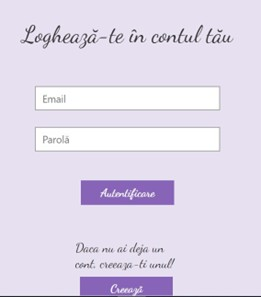
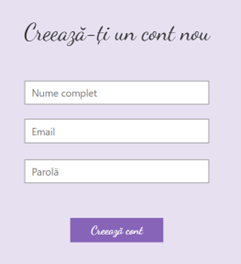
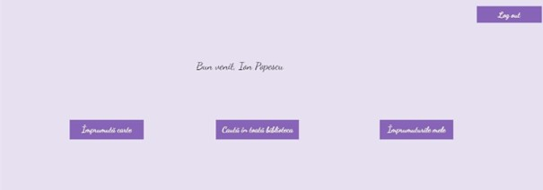
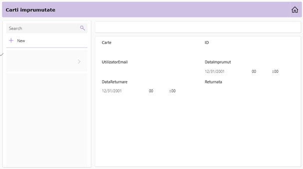
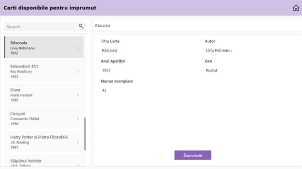

Microsoft PowerApps — Sistem Complet de Gestiune Bibliotecă Virtuală
Arhitectura și Fluxul de Navigare al Aplicației
Această aplicație enterprise a fost dezvoltată în mediu PowerApps Canvas App pentru a digitaliza complet interacțiunea dintre cititori și o bibliotecă virtuală. Structura proiectului urmărește un flux logic de utilizare, oferind o interfață intuitivă ce securizează accesul, fluidizează rezervările și monitorizează termenele de restituire.
1. Ecranul de Pornire (Welcome Screen)
La deschiderea aplicației, utilizatorul este întâmpinat de o interfață minimalistă și aerisită, concepută pentru a iniția sesiunea de lucru. Acest ecran centralizează opțiunile principale de acces prin două butoane mari de acțiune: Log In (pentru utilizatorii existenți în baza de date) și Sign Up (pentru crearea unui profil nou de cititor). Designul ghidează vizual pașii inițiali fără a aglomera experiența utilizatorului.
2. Autentificarea și Înregistrarea (Log In & Sign Up)
Secțiunea de gestiune a identității este împărțită în două ecrane corelate. Formularul de Log In colectează și validează credențialele utilizatorului în raport cu serverul de stocare backend. În oglindă, ecranul de Sign Up permite înrolarea securizată a noilor cititori, integrând câmpuri de input specifice și validări de sistem pentru păstrarea integrității datelor înainte ca profilul să fie salvat în baza de date relațională.


3. Panoul Central de Comenzi (Meniu Opțiuni)
După autentificarea cu succes, utilizatorul ajunge în hub-ul principal al aplicației. Acest meniu general structurează arhitectura de navigare în trei direcții operaționale majore, mapate direct pe nevoile cititorului: opțiunea de a consulta catalogul general de cărți din bibliotecă, modulul pentru trimiterea unei cereri de rezervare în vederea unui împrumut nou și zona de monitorizare a cărților deținute în mod curent.

4. Monitorizarea Împrumuturilor Active
Acest ecran este dedicat exclusiv situației operative a utilizatorului logat. Formatul interfeței extrage dinamic din baza de date doar volumele luate în custodie de acesta. Pe lângă detaliile de identificare ale cărților, modulul integrează o logică de calcul temporal care afișează în timp real numărul de zile rămase până la termenul limită de returnare, ajutând la prevenirea penalizărilor printr-o evidență strictă.

5. Catalogul de Cărți Disponibile
Ultimul modul reprezintă fondul de carte complet al bibliotecii virtuale. Formatul ecranului este structurat sub forma unei galerii dinamice interactive ce listează volumele disponibile pentru împrumut. Interfața include instrumente de căutare contextuală și sortare, oferind utilizatorului posibilitatea de a răsfoi rapid stocul, de a verifica metadatele fiecărei cărți și de a iniția fluxul de rezervare direct din această vizualizare.
